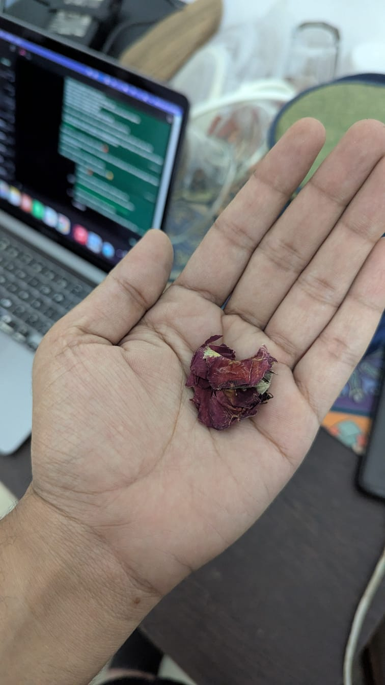

.jpeg)
.jpeg)
Day 3
The Rose You Left Behind
Yesterday you said: “You brought a big smile on your face with all the memories flashbacks.”
That one line stayed with me more than you know.
So today is about one memory I still have — not only in my mind, but literally with me.
That week of silence
For 3–4 days, we were not talking properly.
I was angry. Very angry. Maybe more hurt than angry.
I was supposed to go with you to Marathahalli, and when someone else came to pick you up, something inside me reacted badly.
That week, even in the mornings, I stayed away.
And then, while I was in office, in some meeting, you quietly kept a rose in my bag.
You told me after two days that it was from a temple.
I don’t know if you understood what that did to me.
But I loved it. I felt cared for. I felt very much loved.

Some things dry up. Some things don’t lose meaning.
Maybe because you did not make a big scene. You did not explain too much. You just left something small that said what words were not saying.
The way you care
There are some lines from you that I cannot forget.
“I will still care for u.. I still like u”
And that soft line:
“Huggy krke sula du? Pyaar se baal sehla…”
These were not big speeches. But they felt like care in its purest form.
You have this way of saying the biggest things in small sentences, and somehow those small sentences stay.
One question about that rose
Did you think I would keep it till today?
Choose any one first to see its answer. Then you can tap the other one also to see the second answer.
Then you knew me more than I thought.
Because I kept it not as a flower, but as proof that even during silence, care was still there.
Then let this be today’s small surprise.
I kept it, Golu Babu. Because some gestures become too precious to throw away.
One optional question about me
After reading this, what is one thing you understood about me that I may not have said directly?
This is optional. Today is still about you. I’m only asking because sometimes I don’t know how much of my heart actually reaches you.
Saved, Golu Babu ❤️ Thank you for understanding even a little.
Before you close today’s page
How did today’s page make you feel?
If you want to write even one line, write it here. No perfect answer needed.
Saved, Golu Babu ❤️ Thank you for writing even this much.